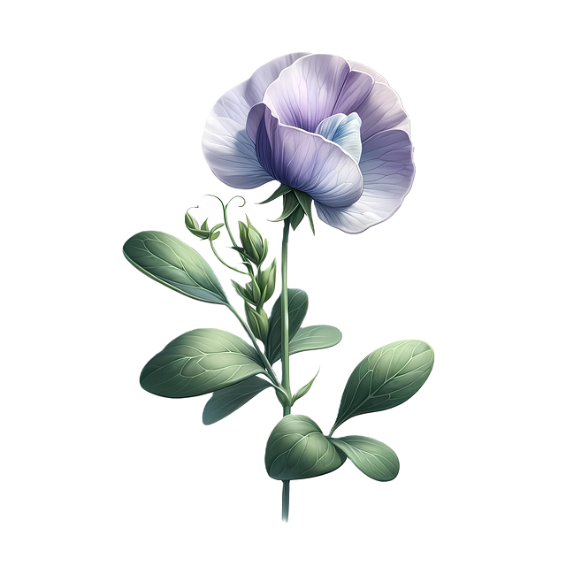

TEKNIK INFORMATIKA
Pada tahun 2010 berdasarkan kebutuhan masyarakat dan industri terkait program diploma 4 bidang informatika maka polinema mendirikan program studi baru diploma 4 teknik informatika. pada awal berdirinya jumlah peserta didik program d4 ti hanya 46 mahasiswa namun pada tahun 2015 jumlah peserta didik mengalami peningkatan menjadi 545 mahasiswa
perkembangan jumlah mahasiswa yang pesat baik di program studi d3 mi maupun d4 ti mendorong pimpinan di polinema untuk menyatukan kedua program studi tersebut dalam satu organisasi jurusan baru terpisah dari jurusan teknik elektro. dibawa jurusan baru terpisah dari teknik elektro dan pada tahun 2015 berdasarkan sk direktur nomor 53 dalam rangaka peningkatan mutu pengelolaan dan optimasi sumberdaya dibentuklah jurusan teknologi informasi dengan prodi d3 mi dan d4 ti